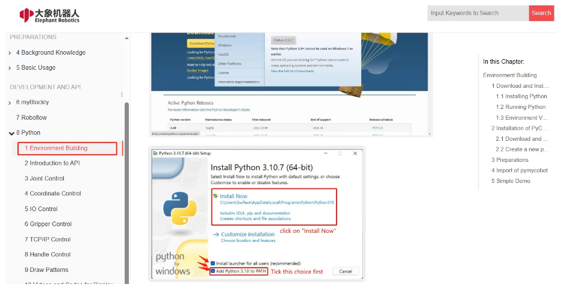
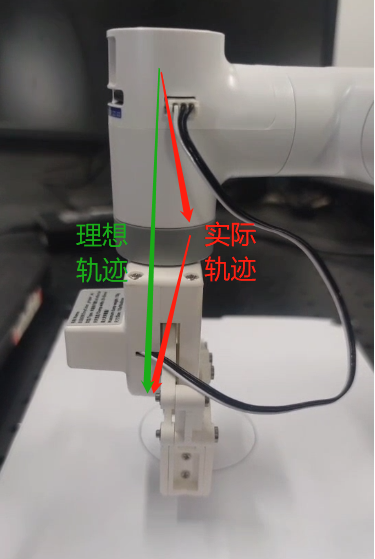
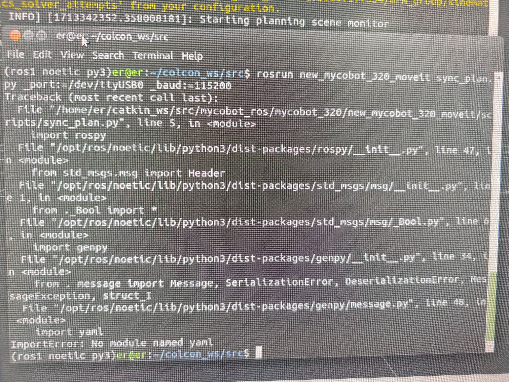
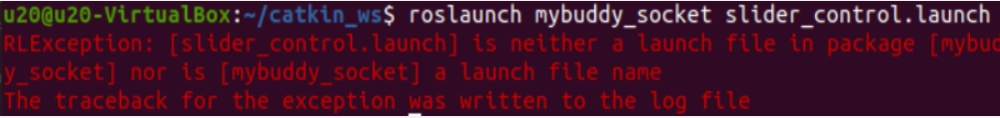

Software Issues
1 myStudio related
Q: What is myStudio?
- A: It is our company's self-developed software. It is a tool for burning or modifying the firmware of the existing robot arm launched by our company.
Q: What is the method to troubleshoot the abnormal download of minirobot, Atom, and PICO firmware?
Check whether the network connection is normal. During the firmware download process, you need to connect to the network to download the firmware first.
Check whether the line has been connected. The details are as follows: In the M5/Arduino series machine, when burning the Atom firmware, you need to use a USB cable to connect the Atom interface at the end to the USB port of the computer; when the M5 series machine burns the nimirobot firmware, use a USB cable to connect the side interface of the M5stack to the USB port of the computer.
Select the firmware of the corresponding model, and don't choose the wrong model.
Download and install the driver. If it still cannot be recognized after downloading the driver, try to replace the latest ch340 driver. If the port number still cannot be displayed after installing the driver and the system is a win11 model, try How to install the CH340 driver in Win11 system.
Try to change a USB cable, USB port or computer to download it to avoid abnormal firmware download caused by the cable not having data transmission function.
Uninstall mystudio and reinstall mystudio in a non-C drive location, such as installing mystudio in the D drive. When mystudio is installed in the C drive, the file permissions are relatively strict, and the firmware may not be burned.
Q: Why does the device not work properly after I burn the firmware to the ATOM terminal?
- A: The firmware of the ATOM terminal needs to use our factory firmware. Other unofficial firmware cannot be changed during use. If the device accidentally burns other firmware, you can use "myCobot firmware burner" to select ATOM terminal-select serial port-select ATOMMAIN firmware to burn the ATOM terminal.
Q: Can the drag teaching in the firmware record the gripper action?
- A: It is temporarily impossible to use drag teaching to record the gripper action, because the gripper belongs to joint number 7, and our drag teaching can only record and play the movement of joints numbered 1-6.
Q: Why can't drag teaching be performed after burning the minirobot firmware?
- A: First check whether the M5Stack-basic firmware and atom firmware are burned, whether the burned firmware corresponds to the requirements to be implemented, and whether the burned firmware is the latest version of the firmware.
- It is recommended to burn the minirobot firmware to version v2.1 and the top atommain firmware to version v4.1 and above (need to support mystudio version v4.3.1 and above).
Q: What should I do if mycobot's serial port cannot be recognized on mystudio?
- A: If your computer device does not prompt for the connected robot arm, please install the serial port driver first.
- In addition, it should be noted that the Raspberry Pi, Arduino and Jetson nano series robot arms are cannot be connected to a laptop using a data cable, and you need to use mystudio in the built-in system to burn the firmware.
Q: Can the trajectory recorded by dragging teaching be saved to the card?
- A: It cannot be saved to the memory card at present. And dragging teaching can only save one path at a time, and the next recording will overwrite the previous action.
2 Roboflow Related
Q: What should I do if I cannot download the Roboflow software or if Roboflow fails to properly control the robot?
- A: Currently, the Roboflow software only supports the 600 Pro and 630 Pro (two professional collaborative robot models). It no longer supports the Mycobot collaborative series or other robot models.
For Mycobot-series robots, it is recommended to use MyBlockly, Python, or ROS for control. Notably, MyBlockly is a software with a graphical interface similar to Roboflow. If you prefer visual, block-based programming, MyBlockly is the preferred choice.
3 Python related
Q: The running prompt is missing library filesQ: The error message: ModuleNotFoundError: No module named "pymycobot", how to deal with it?
A1: Pymycobot is not installed. The corresponding solution is to reinstall pymycobot. The command is
pip3 install pymycobot --upgrade --userA2: During the installation of Python, the "Add Pythonxx to PATH" in the figure below was not checked. You need to uninstall Python and reinstall Python, and check this option.

A3: If it is an M5 or AR series machine, please confirm whether there are multiple Python versions in the PC. It is recommended to uninstall all Python versions in the PC and reinstall a version higher than Python 3.8. Note that there is only one Python version higher than Python 3.8 in the PC. If multiple python versions are required for actual use, please specify the python version used by pymycobot and specify the python version when calling the pymycobot library.
A4: It is recommended to use version 3.9 of pyhton, as pyhton12 will be incompatible.
Q: Is there a more popular explanation for the mode in send_coords(coords, speed, mode)?
- A: Linear 1 means that the end of the robot reaches the target position in a straight line. If it cannot go in a straight line due to limitations, structure, etc., the command will not be fully executed; Linear 0 means that the end reaches the target position in an arbitrary posture. Since there is no straight line restriction, it is not easy for the command to not be executed.
Q: What is the difference between the interpolation and refresh modes of set_fresh_mode(mode)?
- A: Interpolation 0 means that many dense points are planned between the starting point and the end point, so as to achieve the effect of controlling the trajectory of the middle segment. How to achieve the effect of program parallelism: Non-interpolation 1 means that there is no planning of the middle segment, and the trajectory cannot be controlled, but the movement will be relatively smooth.
Q：Is it normal for the trajectory not to be straight up and down when only the Z-axis is changed, but the final landing point is adjusted only in the Z-axis? How can the middle trajectory be ensured to be straight？

- Turn on interpolation and walk in a straight line to ensure the trajectory
set_fresh_mode(0) # Turn on interpolation
send_coords(coords, speed, mode=1) # Walk in a straight line
Note that the intelligent planning route set in send_coords will only be useful after turning on interpolation. Interpolation means that many dense points are planned between the starting point and the end point, so as to achieve the effect of controlling the trajectory of the middle section. Non-interpolation means that there is no planning of the middle section, and the trajectory cannot be controlled.
Q: What does the return value of get_error_information() being -1 mean?
- A: The return value of
get_error_information()is -1, indicating that communication is not possible. You need to check whether the power adapter and USB cable are connected, and whether the LCD screen stays on the Atom: ok interface. If the line is not connected successfully and does not display ok, communication abnormalities will occur. You need to reconnect and test again.
Q: In the case of drawing with a 280 machine, it is found that the shape trajectory is not very straight. Can it be optimized?
A1: It is normal to get a deviation in the trajectory when using a signature pen or hard stationery to draw this case. There are two main reasons for this deviation. First, mycobot uses a servo motor, which has a certain accuracy deviation (if it is a machine that has been used for a long time, the deviation of its joints will be greater due to aging of the joints). Second, when using a hard pen to draw, the contact distance with the desktop is relatively demanding. If the distance is too high, the trajectory is prone to interruption. If the distance is too low, the pen tip resistance will be too large and the drawing effect is not ideal. It is currently recommended to use soft stationery for drawing, such as brushes and other tools, which will help improve the drawing effect.
A2: In addition, you can change the motion mode of the robot arm to interpolation mode, so that the motion trajectory will be relatively straight.
set_fresh_mode(0) # Enable interpolation
send_coords(coords, speed, mode=1) # Go straight
Note that the intelligent planning route set in send_coords will only be useful after interpolation is turned on. Interpolation means that many dense points are planned between the starting point and the end point to achieve the effect of controlling the trajectory of the middle section.
Q: The target position is identified, but the end cannot reach it. How to determine whether this coordinate can be reached and then process it?
- A: Use solve inv kinematics(target coords, current_angles) to see if there is a solution. solve_inv_kinematics(target_coords, current_angles)
- Function: Convert coordinates to angles.
- Parameters:
- target_coords: list A floating point list of all coordinates.
- current_angles: list A floating point list of all angles, the current angle of the robot
- Return value: list A floating point list of all angles.
4 ROS related
Q: Is there a virtual machine image with a configured environment?
- A: We have provided a virtual machine environment with configured ROS1 and ROS2 environments and built-in ROS source code. Users can download it through the following link and import the virtual machine file into VirtualBox, saving the trouble of configuring the environment by themselves. When testing ROS cases, it is recommended to use the virtual machine environment we have configured for verification to avoid some case operation errors due to environmental configuration reasons Please refer to the operation steps video of importing virtual machine files into virtual machine software: https://drive.google.com/file/d/1KeYk_CUgDE46rVn7zbd0EhraIbgt3qZt/view?usp=sharing
ROS1 virtual machine file download
Download ROS2 virtual machine file
Download virtual machine software VirtualBox
Q: How to deal with errors when importing ROS2 virtual machine files?

- A: This is because the version of the virtual machine software Oracle VM VirtualBox is too low, and the virtual machine software version needs to be updated.
Q: How to re-download the ROS source code package?
- A: Use the command to pull:
git clone https://github.com/elephantrobotics/mycobot_ros.git
Or download manually. The download method is to enter the ROS source code package address and follow the steps below. The source code package address is: https://github.com/elephantrobotics/mycobot_ros

Q: What should I do if I run the ROS moveit case and get an error ImprotError: No module named yaml?

- A: In the first line of this script, change the Python interpreter to python3
Q: What should I do if the serial port cannot be found when running the virtual machine?
A: Use a USB cable to connect the M5 robot to the PC, open the virtual machine settings → USB device → Add USB device → Select the serial port number QinHeng xxxxx, which is the serial port device of the machine. If there is no such device number, you can get the corresponding USB device number by re-plugging the device. The serial port number corresponding to the machine serial port device number is the one that changes when plugging and unplugging.

Q: Using a mujoco-based environment for simulation training, the robot's xml file is required
- A: Currently, there is only the 280JN xml file on GitHub: 280JN
- Provide customers with methods on how to convert dae and urdf files into xml files, and let customers use meshlab to convert by themselves.
Q: When the terminal switches to ~/catkin_ws/src and uses git to install and update mycobot_ros, the target path "mycobot_ros" already exists. What is the reason?
- A: This means that there is already a
mycobot_rospackage in~/catkin_ws/src. You need to delete it in advance and then re-execute the git operation.
Q: When rosrun is running, the terminal reports an error message counld not open port /dev/ttyUSB0: Permission: '/dev/ttyUSB0', why?
- A: The serial port permissions are insufficient. Enter
sudo chmod 777 /dev/ttyUSB0in the terminal to grant permissions.
Q: When rosrun is running, the terminal prompts Unable to register with master node [http://localhost:11311]: master may not be running yet. Will keep trying. Why?
- A: Before running the ros program, you need to open the ros node. Enter
roscorein the terminal.
Q: When rosrun is running, the terminal reports an error message counld not open port /dev/ttyUSB0: No such file or directory: '/dev/ttyUSB1', why?
- A: The serial port is incorrect. You need to confirm the actual serial port of the current robot. You can check it through
ls /dev/tty*.
Q: In Ubuntu 18.04, catkin_make failed to build the code, and the terminal prompted Project 'cv_bridge' specifies '/usr/include/opencv' as an include dir, which is not found. and other error messages
- A: The opencv path in the configuration file does not match the actual system path. You need to use sudo to modify the configuration file (the path is
/opt/ros/melodic/share/cv_bridge/cmake/cv_bridgeConfig.cmake), and the actual system opencv path is under the/usr/include/path.
Q: I just cloned the mycobot_ros package, and then ran the rosrun program directly. The error package 'mycobot_280' not found or the file could not be found appeared?
- A: The mycobot_ros that I just cloned needs to build the code for ros environment compilation. Terminal input
cd ~/catkin_ws/
catkin_make
source devel/setup.bash
Q: After the compilation is completed, why does the following error appear when the launch command is run in a new terminal?

- A1: The system does not add ros environment variables, so you need to source each time you open a new terminal:
cd ~/catkin_ws/
source devel/setup.bash
- A2: The system adds ros environment variables, and you do not need to execute source each time you open a new terminal:
# noetic is Ubuntu20.04 system
echo "source /opt/ros/noetic/setup.bash" >> ~/.bashrc
source ~/.bashrc
- A3: The file name in the command may be inconsistent with the actual file name in the mycobot_ros package. Please check the command carefully for errors.
5 C++ related
Q: What should I do if I can't find various dll files?
A1: If myCobotCpp.dll is missing, put myCobotCpp.dl in the lib directory to the directory where mycobotcppexample.exe is located.
A2: If QT5Core.dll is missing, open qt command (search QT in the menu bar), select msvc2017 64-bit, and execute windeployqt--release to the directory where myCobotCppExample.exe is located (such as: windeployqt --release D:lvs2019myCobotCpploutlbuildlx64-Releaselbin). If the vs installation path cannot be found after executing the command here, please check the settings of the vs environment variables.
After executing the above steps, if the qt5serialport.dll file is missing, move this file in the gt installation directory (path such as: D:lgt5.12.1015.12.10msvc2017 64bin), copy it to the directory where myCobotCppExample.exe is located
Q: Generate the myCobotCppExample.exe executable file, what could be the problem? Select the start